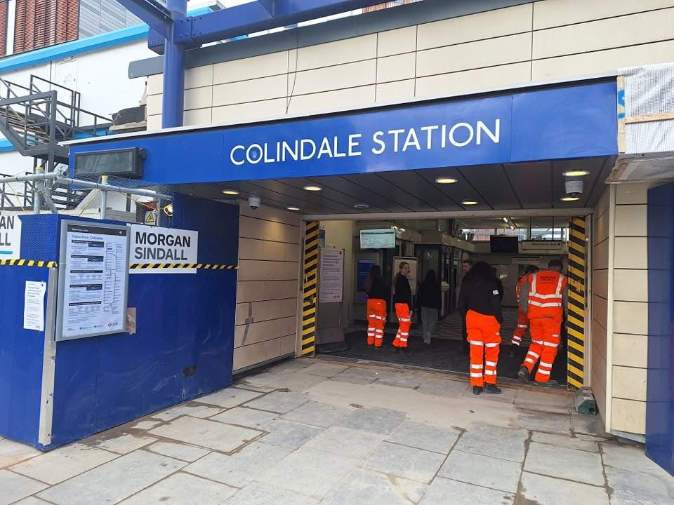

December in Colindale Gardens: A Month of Community, Chaos, and Christmas Cheer
As the year wound down, the Colindale Gardens group chat buzzed with the kind of energy that only December can bring. From heating woes to holiday plans, tech troubles to tube station updates, the conversations were a microcosm of life in this vibrant community. Let’s take a stroll through the highlights of the month, uncovering the recurring themes, key events, and the ever-shifting mood of the group.
If December had a theme song for Colindale Gardens, it would be a mix of “All I Want for Christmas Is You” and “Fix It” by Coldplay. The chat was dominated by two major threads: practical problem-solving and festive preparations.
Timeline of Key Events
December was a month of milestones, both big and small. Here’s a chronological snapshot of the standout moments:
- December 1-5: The month kicked off with a flurry of practical queries. Resident WP schooled the group on oven seals, while sensei sought PS5 game recommendations and troubleshooting tips. Resident A’s water shortage in Block Q prompted a quick lesson in reporting issues to the concierge.
- December 6-10: The chat saw its first festive spark with the introduction of Princess Haleh Beauty, offering holiday discounts on nails, lashes, and brows. Meanwhile, the heating debates raged on, and Resident V’s Ethernet woes continued.
- December 11-17: The countdown to Colindale Station’s reopening began in earnest. Residents shared updates, speculated on timelines, and debated the merits of alternative travel routes. The Santa event on December 18th brought a dose of holiday magic, though some lamented the absence of reindeer.
- December 19-21: As Christmas approached, the chat turned to holiday logistics. Where to buy Christmas trees? (IKEA Wembley and Pines & Needles were top picks.) How to print last-minute documents? (The concierge and Colindale Library came to the rescue.) And, of course, the annual Santa event, complete with reindeer (or lack thereof), sparked excitement and nostalgia.
- December 20: The big day arrived! Colindale Station reopened, albeit in a temporary state. Residents shared photos and first impressions, celebrating the return of a crucial transport link. After months of closure, the community eagerly awaited news, with updates from TfL dissected and debated. The station’s temporary reopening on December 20th was met with relief, though questions about escalators, lifts, and ticket gates kept the conversation alive. 
- December 22-31: The final stretch of the month was a mix of festive cheer and post-holiday cleanup. Discussions ranged from airport cab recommendations to stolen packages in the lobby. The year ended with a flurry of New Year’s Eve plans and fireworks-related complaints.


General Mood and Sentiment
The tone of the chat was a rollercoaster, reflecting the highs and lows of December. Early in the month, the mood was pragmatic and slightly frazzled, with heating bills and tech issues testing everyone’s patience. However, as Christmas approached, the conversations grew lighter, peppered with humor and holiday excitement.
The cold weather brought heating systems to the forefront of discussions. Resident WP emerged as the unofficial heating guru, offering detailed advice on thermostat settings (see Myson Thermostat PDF), energy bills, and even the science behind keeping pipes clean. Questions like “How much is your heating bill?” and “Should I turn off my heating when I travel?” sparked lengthy threads, with residents sharing tips on saving energy while staying warm.
The reopening of Colindale Station was a unifying moment, bringing a sense of relief and optimism. Even the occasional spat (like the heated debate over group rules and admin decisions) couldn’t dampen the festive spirit for long. By the end of the month, the chat was a blend of gratitude, nostalgia, and New Year’s resolutions.
Final Thoughts
December in Colindale Gardens was a testament to the power of community. Through heating headaches, tech troubles, and holiday hustle, the group chat served as a lifeline, a sounding board, and sometimes even a comedy club. As the year came to a close, the conversations reflected a shared sense of resilience and camaraderie.
So, what made this month so memorable? It wasn’t just the big events like the station reopening or the Santa visit. It was the little moments—the inside jokes, the helpful tips, the collective sighs of relief—that truly defined December in Colindale Gardens. Here’s to a new year filled with even more connection, collaboration, and community spirit!